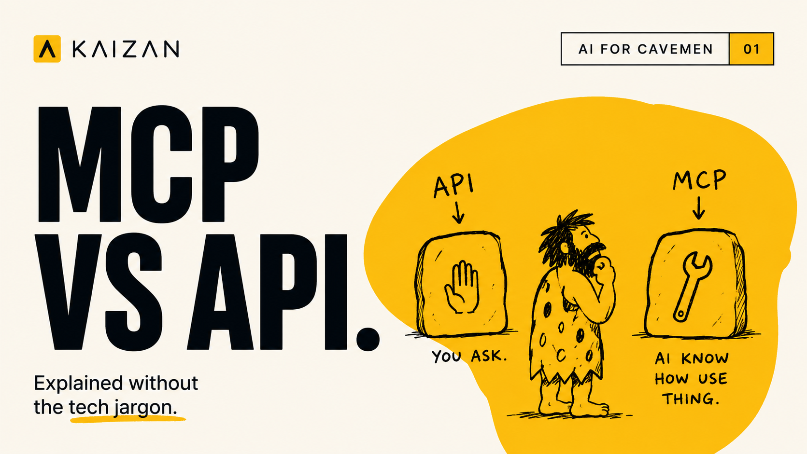

MCP vs API, in Plain English

If you got here from the reel, good news: the caveman was basically right.
Here is the same thing in full sentences, with no technical background needed.
The question everyone is actually asking
You are being asked whether your AI "integrates" with your systems. Somewhere in the answer, someone says API. Someone else says MCP. Both sound like the same kind of thing. They are not, and the difference is worth two minutes of your time, because it decides whether your AI is a shortcut or a second brain.
An API is a vending machine
An API is how two bits of software pass information to each other. It has been the standard way to do this for twenty years, and it works.
Think of it as a vending machine. Someone decided what goes in it and which button gets you what. Press B4, get the thing in B4. Every time, no surprises.
That reliability is the point. It is also the limit. You can only get what somebody stocked. If you want something that is not in the machine, you raise a request, wait for someone technical to build it, and hope it arrives before the quarter ends.
There is a second problem nobody mentions in the sales meeting. Every connection has to be built by hand, one pair at a time. Four AI tools that each need to reach five of your systems is twenty separate builds, each one needing maintenance. This is why so much agency reporting still ends up in a spreadsheet somebody updates manually on a Monday.
MCP is telling someone what you actually want
MCP stands for Model Context Protocol. It is a shared standard, published by Anthropic in late 2024 and now used across the industry, for how AI connects to the systems where your work lives.
The change is who does the deciding.
With an API, a developer decided in advance what your AI is allowed to ask for. With MCP, your system offers up its capabilities in plain language that the AI can read, and the AI works out which ones it needs based on the question you just asked it.
You stop being limited to the questions somebody thought of twelve months ago.
The comparison people use is a USB-C cable. One standard connector, so anything plugs into anything, instead of a drawer full of chargers that each only fit one device.
Where the caveman oversimplified
In the reel, the friend already knows the answer. Not quite.
Your AI still has to go and look things up. What changes is that it decides where to look, in the moment, rather than following a script written by someone who was guessing at your job.
That is a smaller-sounding difference than it is.
What it looks like on a Tuesday morning
Ninety minutes before a renewal conversation.
With a traditional integration, you have a dashboard. It answers the questions it was built to answer. It will not tell you about the three things you promised on a call in March that quietly never got done.
With MCP, you just ask. In your own words.
One of our clients put it like this:
"I probably on a daily basis interrogate Kaizan — take me back to this meeting where so-and-so was talking about such-and-such. Without Kaizan, what's the alternative? Just reaching into the deepest recesses of your mind, which is obviously flawed."
That is the real unlock. Not another report. The ability to go digging through a whole client history without knowing in advance what you are looking for.
Three things to keep in mind
MCP does not replace APIs. It mostly sits on top of them. The API still moves the data. MCP is what makes that data make sense to an AI.
It does not replace your security questions. If anything, ask more of them. When the AI is choosing what to access rather than following a fixed script, you want to know exactly what it can and cannot reach. Ask any vendor that before you connect anything.
It is only as good as what is underneath. Connect an AI to a folder of raw meeting transcripts and you get a fast way to search transcripts. Connect it to a system that has already tracked every commitment, scored every relationship and flagged every risk, and you get something far more useful.
What this looks like with Kaizan
Kaizan runs an MCP server, which means you can point Claude or any other AI tool that speaks the standard straight at your client portfolio. No export, no dashboard, no waiting on a build.
What it can reach:
- Your client list, including tiers, so you can ask about one account or a whole segment
- CARE scores, both the latest picture and how each score has moved over the last year
- A ranking of your whole portfolio, worst accounts first, because that is the list that needs acting on
- Every meeting, including summaries you can search by meaning rather than keyword, and full transcripts when you need the exact words
- Sentiment moments, from a client quietly going cold to a genuine high point worth building on
- Action items, and whether they actually got done
Which means the questions stop being "what does the report show" and start being:
Which of my accounts are at risk right now. Has responsiveness on this client improved since we changed the team. What did they say about the budget in the spring. What did we promise on the last three calls, and did any of it happen.
It also respects who you are. Ask about your own meetings and actions and you get yours. Ask about the portfolio and you only ever see the clients you have access to. The AI can reach a lot, but not more than you can.
The short version
APIs let your software talk to your software. MCP lets your AI talk to your business.
The truth on every client relationship, and the AI Helpers to act on it.
The caveman was close enough. MCP is the one that makes AI actually useful.